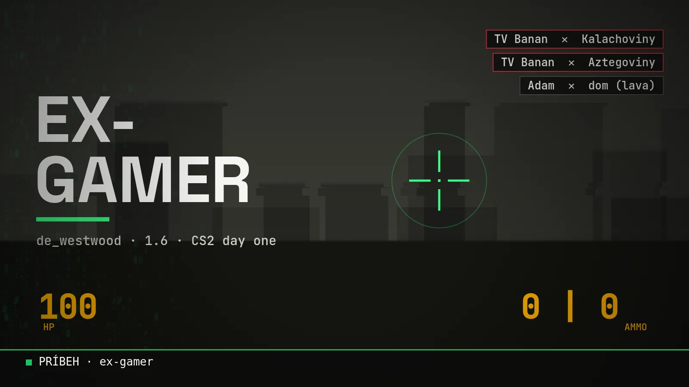

Blog ·
Ex-gamer: skončil som v deň, keď vyšlo CS2
Od červeného autíčka na diskete cez Counter-Strike 1.6 u kamošov až po deň, keď vyšlo CS2 a ja som s e-športom skončil. Príbeh človeka, ktorý vedel hrať na mape, na ktorej nikto iný nevedel.

Som CS-kový typ. Counter-Strike 1.5, 1.6, Source, Global Offensive. A v deň, keď vyšlo CS2, som s e-športom skončil. Neviem prečo. Proste to tak vyšlo.
- 1 deňkeď vyšlo CS2, skončil som
- 1 zápasv e-športovej lige. Prehra, ale medaila doma
- 6 ľudísa smialo, keď horel Adamov dom
- 2 kartyAncient Mew: japonská a európska
Autíčko z diskety a rozdiel medzi monitorom a počítačom
Prvá hra, čo si pamätám: červené autíčko zhora. Išlo sa len doľava a doprava. Tuším to bolo na diskete. Aký to bol počítač, netuším.
Pamätám si ale, ako to začalo. Oco najprv doniesol monitor. A ja som chcel hrať. Nechápal som, prečo nemôžem, keď už tam ten monitor je. „Však to zapni!“ Vtedy som pochopil rozdiel medzi monitorom a počítačom.
Counter-Strike: od 1.5 po GO
- CS 1.5u kamošov, presnejšie u Nina a u Lofiho
- CS 1.6potom sme ho mali už všetci
- Sourcehral som ho väčšinou sám. Potom zase späť na 1.6
- Global Offensiveprvá verzia, ešte bez skinov. Neviem, či som to nemal dokonca aj na PlayStation 3. Potom prišli skiny a začali to hrať všetci
- CS:GOchodili sme hrávať aj do Stormu. To bolo niečo
- CS2v deň vydania som skončil s e-športami
Pri 1.6 ešte jedno. U Tomáša na počítači sme mali v CS-ke tímy pomenované Kalachoviny a Aztegoviny. A Nino mal doma od staršieho brata nainštalovaný český dabing. Keď si hodil granát, postava povedala: „Ale prdy.“ Smiali sme sa na tom celkom dosť.
De_westwood, moja mapa
Westwood je klasika. Boli to servery, kde sa striedali mapy, nejaké classic servery, možno z Gamesites.cz, už to presne nepoviem. A tam bol aj Westwood, kde vždy vládol cirkus. Lebo tam nikto nevedel hrať.
Nikto tam nevedel hrať. Iba ja.
TV Banan
Prezývka? Netuším, ako vznikla. Keď som hrával Trackmaniu, volal som sa TV Banan, Televízia Banan. Prečo, neviem. Ale na tom bolo to super, že taký nik nemal. Bol môj.
V tíme na Trackmanii som sa potom prepísal a pridal klanový tag. Bol to Hamachi War Clan, takže veľkými písmenami tag klanu a malými banan. Vrchol kariéry.
Najlepšia partia, najhorší dom
A čo je najlepší herný moment? Nebol to žiadny clutch. Bol to Minecraft.
Stavali sme všetci spolu a Adam si v drevenom dome začal robiť krb. Hodil tam lávu. Dom začal horieť. On len: „Koľko mi horí dom?“ a nič nebolo vidieť. Ja som sa otočil, on sa rozbehol s vedrom a ja som šiel po vodu. Keď som sa otočil znova, horel mu celý dom a šiesti ľudia sa na ňom smiali.
A najlepšie bolo, že to bol ten prvý dom, v ktorom ešte ani raz nespal. Mal tam kompletne všetko, veci z oceánu, všetko. A zhorelo mu to. Strašné. Ježišmaria.
Medaila za jeden zápas
Vrchol? Keď sme hrali e-športovú ligu. Síce sme prehrali, ale nevadí: máme z toho medailu doma. Za jeden zápas, ktorý som odohral.
Zlom: CS2 a MacBook
Presne v deň, keď vyšlo CS2, som prestal. Neviem prečo, ale tak to vyšlo. Vtedy som už ani nemal herný počítač, len MacBook. Takže som na ňom mohol hrať tak akurát Hearthstone Battlegrounds. Smutné.
Čo mi to dalo
V podstate celý život. Vďaka hraniu som mal polovicu kariéry. Skúsenosti zo situácií, do ktorých som sa vďaka gamingu dostal, mi dali znalosti, ktoré ma posunuli na miesta, kam by sa nikto iný nedostal. Ak nemáš ten herný „knowledge“, nedostaneš sa tam.
- Tímová komunikáciav CS-ke sa dohodneš za dve sekundy, alebo prehráš
- Rýchle rozhodovanienemáš čas na rozmýšľanie, keď ti horí dom
Dve najkrajšie karty
Z Pokémon kariet som najhrdší na Ancient Mew, japonskú verziu. A potom mám aj európsku. Sú to moje dve najkrajšie karty.
Čo hrám dnes?
Život. Haha.
A ty? Čo si hral a prečo si prestal? Napíš mi, rád si to prečítam.
Chceš si niečo také vyskúšať sám? Na 3-hodinovej session ťa to naučím na tvojich vlastných veciach.
15 min hovor zadarmo